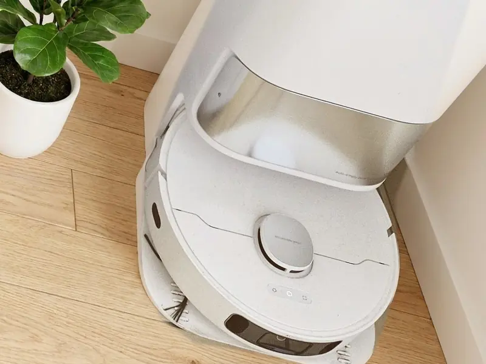

Mehr Zeit für die schönen Dinge.
MYLE ist für alle, die es leid sind, ihre kostbare Freizeit mit Hausarbeit und Kochen zu verbringen. Hier findest du Helfer, die dir diese Arbeit abnehmen. So bleibt mehr Zeit für deine Hobbys oder eine Auszeit auf der Couch.
- Kurzes Erklärvideo
- Empfehlung für jedes Budget
- Rechner: Lohnt es sich für dich?
Helfer, die dir Arbeit abnehmen
Wähle den Bereich, in dem du künftig Zeit sparen möchtest. Zu jedem Helfer findest du ein günstiges Gerät, eines aus der Mittelklasse und eines aus der Oberklasse. Fahr mit der Maus über einen Helfer, dann läuft sein Video.
Dein Saug- und Wischroboter kann putzen, während du arbeitest.
Das wissen die meisten gar nicht. Du legst in der App einmal einen Zeitplan an, zum Beispiel für die Stunden, in denen du arbeitest, und das war's. Wenn du heimkommst, ist gesaugt und gewischt.
Ausrechnen, wie viel Zeit das spart„Seit 14 Jahren sauge ich so gut wie nie mehr selbst. Jeden Tag nach der Arbeit in eine frisch gesaugte und gewischte Wohnung zu kommen, ist ein massives Upgrade der Lebensqualität.“
Hi, ich bin Lukas.
Meine zeitintensiven Hobbys wie Kraftsport, Trekking und das Bergsteigen haben mich schon früh dazu gezwungen, meine Zeit zu optimieren. Und ehrlicherweise finde ich auch nichts lästiger als Hausarbeit und Kochen.
Mit 18 Jahren kaufte ich mir also meinen ersten Saugroboter. Die fuhren damals noch per Zufallsmuster durch die Wohnung, trotzdem war das bereits eine Riesenhilfe. Da war mir klar: Es gibt kein Zurück mehr! Seitdem wuchs die Sammlung an Geräten und die Begeisterung für Technik, die wirklich einen Mehrwert bringt, von Jahr zu Jahr.
Mit MYLE bringe ich diese Helfer zu allen, die mehr aus ihrer Zeit machen oder sich im Haushalt nicht unnötig abmühen wollen. Zu jedem Gerät sage ich dir ehrlich, was mich überzeugt und unter welchen Umständen es vielleicht nichts für dich ist.
Mein wichtigster Tipp: der Saug- und Wischroboter
So wähle ich aus
Nimmt dir echt Arbeit ab
Nur Helfer, die dir eine lästige Aufgabe ganz oder fast ganz abnehmen. Nicht nur hübsch, sondern wirklich nützlich.
Unterschätzt
Viele dieser Helfer kennt kaum jemand, oder man unterschätzt, was sie können. Genau die stelle ich dir hier vor.
Für jedes Budget
Zu jedem Helfer nenne ich dir ein günstiges Gerät, eines aus der Mittelklasse und eines aus der Oberklasse, dazu gute Alternativen anderer Marken. Und ich sage dir ehrlich, welches ich nehmen würde.
Ehrlich gerechnet
Jeder Rechner zeigt dir, womit er rechnet. Ich schätze lieber vorsichtig, als dir etwas schönzurechnen. Und du kannst alles an dein eigenes Leben anpassen.